As India races toward its 500 GW renewable energy target and a mandated 208 GWh of Battery Energy Storage Systems (BESS) by 2030, the Power Conversion System (PCS) has emerged as one of the most consequential technical decisions in any storage project. While batteries often command attention in project discussions, the PCS is the true bridge between the DC world of battery chemistry and the AC world of the national grid — and getting it wrong means poor efficiency, non-compliance, and potential project delays.
This article provides a comprehensive guide to PCS selection criteria and the grid code/compliance framework that every BESS developer, EPC contractor, and energy storage professional needs to know in the Indian context.
What Is a PCS and Why Does It Matter?
A Power Conversion System is the hardware and software interface between a battery bank (DC) and the electrical grid (AC). It manages the bidirectional conversion of energy — charging batteries from the grid when surplus power is available and discharging stored energy back when the grid needs it. But the role of a PCS goes far beyond simple AC/DC conversion.

A well-selected PCS determines how effectively a BESS can:
- Charge and discharge at the required C-rate
- Maintain grid stability through reactive power and frequency support
- Integrate seamlessly with SCADA and Energy Management Systems (EMS)
- Handle grid faults and enable advanced functions like black start
The PCS also communicates with the Battery Management System (BMS), ensuring safe operation and maintaining energy flow balance at all times. Without a high-quality, properly specified PCS, even the most advanced lithium-ion battery arrays cannot perform effectively in a grid-connected environment.
Key Selection Criteria for PCS
1. Power Rating and DC Bus Voltage
The most fundamental step in PCS selection is correctly matching its capacity to the BESS sizing. For example, a 501.5 MWh system operating at 0.25C requires a 125 MW PCS. Under sizing the PCS creates bottlenecks; oversizing inflates CAPEX unnecessarily.
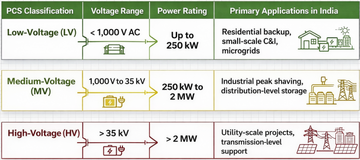
DC bus voltage compatibility is equally critical. The two dominant standards are 1,000 V and 1,500 V DC. Over the past few years, the 1,500 V DC architecture has become the utility-scale standard globally and increasingly in India. The rationale is straightforward: higher voltage enables higher power transfer at lower current, reducing energy losses, minimizing the size of cables and protection devices, and simplifying the overall electrical infrastructure. This directly lowers the Levelized Cost of Energy (LCOE) — a key metric for commercially stressed BESS projects. The industry is already beginning to explore 2,000 V architectures for even greater optimization.
2. Architecture: Central, String, or Modular
The architecture of the PCS is one of the most strategically significant decisions a project developer makes. There are three primary options, each with distinct trade-offs:
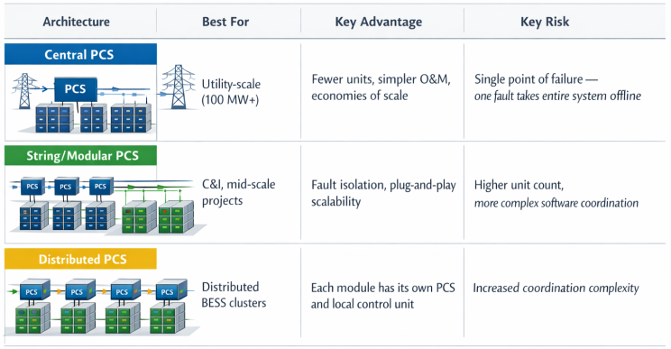
For large-scale Indian projects like NTPC's 4,000 MWh deployment across thermal stations, centralized PCS architecture offers compelling economies of scale. However, for projects where high uptime is contractually mandated (e.g., ancillary services contracts with Grid-India), modular string PCS provides superior fault tolerance — if one unit fails, only that fraction of capacity goes offline, not the entire installation.
3. Efficiency and Round-Trip Performance
Efficiency is perhaps the most financially consequential PCS specification. But efficiency figures require careful interpretation. Manufacturers often quote cell-level or DC-side efficiency — what truly matters in utility projects is the grid-level AC Round-Trip Efficiency (RTE).
Before finalizing any PCS, engineers must ask: "Where exactly is the RTE measured?" Poor integration between the PCS, transformers, and auxiliary systems can significantly erode real-world efficiency even if the PCS datasheet claims impressive numbers.
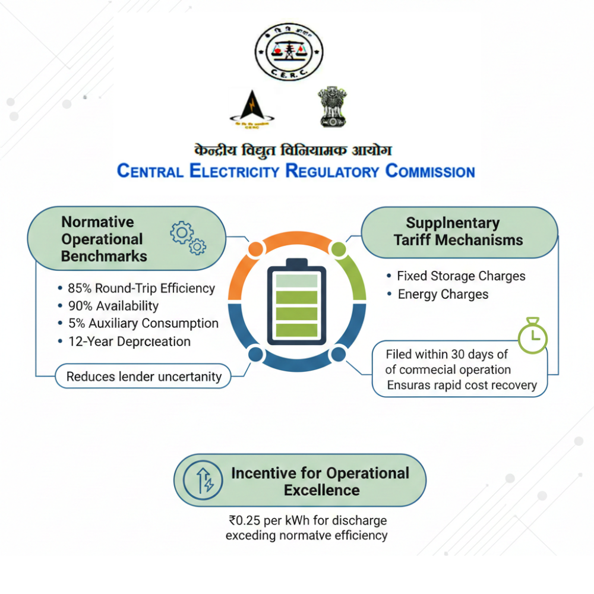
From a regulatory standpoint, CERC has established a normative RTE of 85% for integrated BESS systems in Indian grid tariff calculations. The VGF Scheme for BESS also references an 80% RTE benchmark in project orders. Premium modern PCS units, such as the AlphaESS STORION series, can achieve up to 98.3% Euro Efficiency at the converter level, but system-level losses from transformers, cooling, and cabling reduce net RTE.
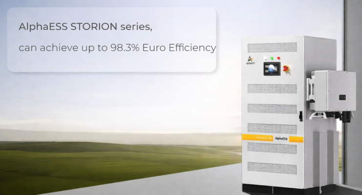
4. Grid Support Functions
A modern PCS for Indian grid deployment must support a comprehensive suite of grid services:
- Reactive Power Control (Q Control): The ability to inject or absorb reactive power, vital for maintaining voltage stability at the Point of Interconnection (POI)
- Active Power and Frequency Droop: Proportional response to frequency deviations, supporting the Indian grid's Primary Frequency Response (PFR) requirements
- Ramp Rate Control: The ability to limit active power ramp rates, which CEA mandates at ±10%/min for BESS projects
- AGC Set Point Control: Ability to respond to signals from Automatic Generation Control for secondary frequency regulation
- Overload Capability: Some PCS units can sustain 1.2× rated current for 2 minutes, critical for handling transient grid instability
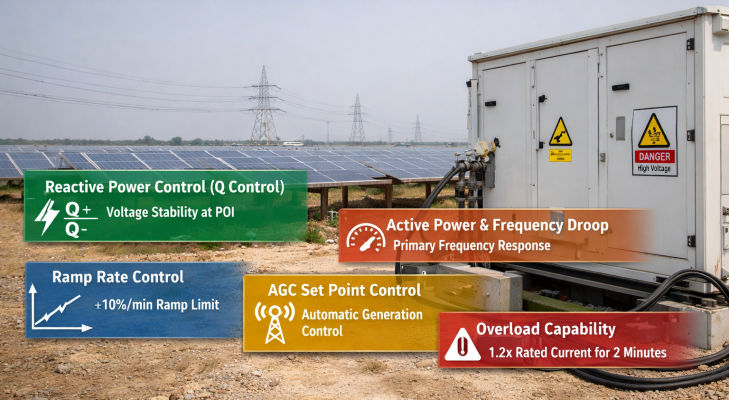
5. Grid-Forming vs Grid-Following
This is the most forward-looking selection consideration for India. Conventional PCS units operate as Grid-Following (GFL) inverters — they synchronize to an existing grid voltage and frequency reference. Grid-Forming (GFM) inverters behave like virtual synchronous generators: they can establish voltage and frequency, provide synthetic inertia, and operate stably in weak-grid or islanded conditions.
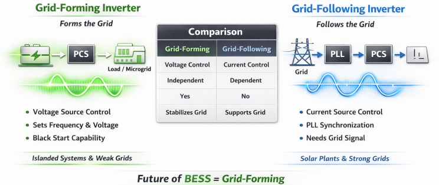
In January 2026, Grid Controller of India Limited published a landmark discussion paper proposing that all new BESS installations of 50 MW and above should incorporate grid-forming capability, particularly in weak-grid or remote areas. A GFM PCS can:
- Establish voltage and frequency references autonomously
- Provide virtual inertia and damping
- Enable black start capability (restoring grid after a blackout)
- Ride through disturbances without tripping
- Operate in weak grids with low short-circuit ratios
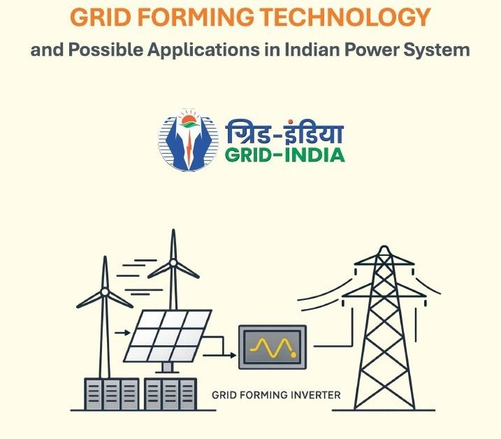
Stakeholders were invited to comment on this proposal through February 2026. While GFM mandates are not yet legally enforceable for BESS, developers selecting PCS for new large-scale projects should anticipate this direction and factor GFM readiness into their procurement decisions.
6. Protection, Communication, and SCADA Integration
A PCS must integrate with the plant's SCADA and EMS platforms, and communicate operational data (voltage, frequency, power flows) to relevant Load Despatch Centers. Under the CEA Uniform Protection Protocol approved in November 2024, all grid users at 220 kV and above (132 kV in the North-Eastern Region) must comply with standardized protection coordination — including for BESS installations. This protocol addresses protection for generating stations, substations, HVDC terminals, and BESS to ensure grid stability, reliability, and security.
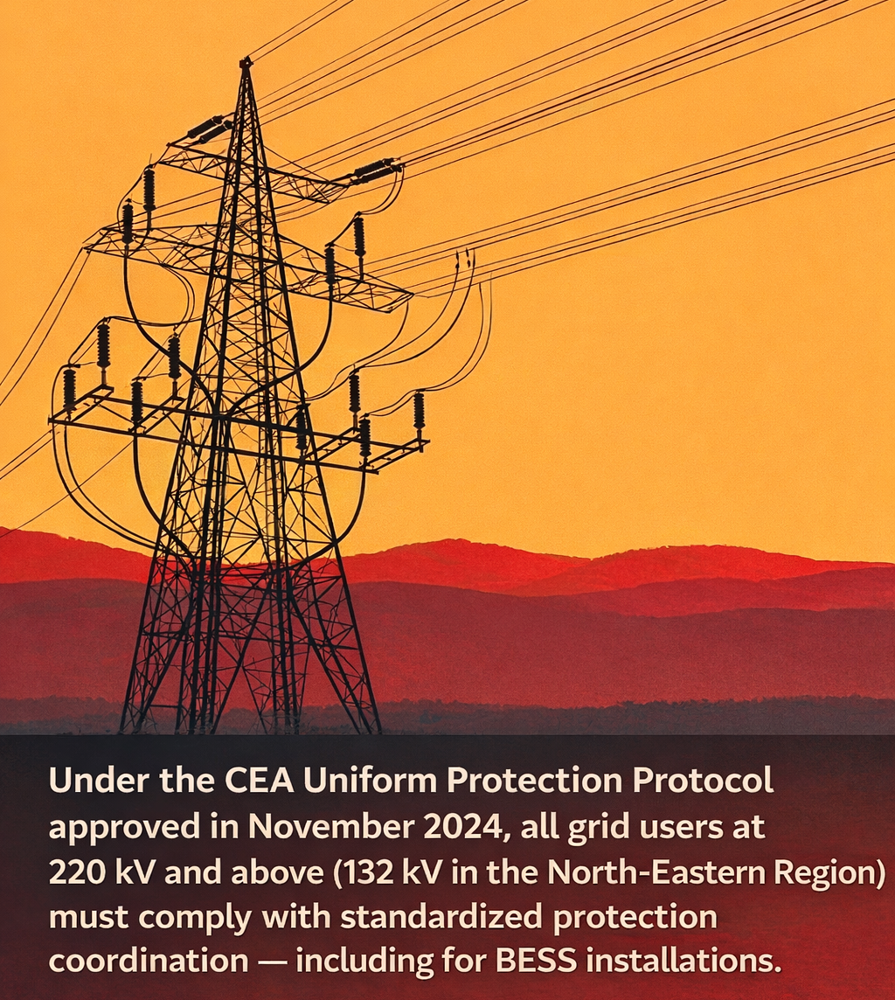
7. Thermal Management Integration
In India's diverse and often extreme climate conditions, the PCS-battery thermal integration is a critical reliability factor. Optimal battery operating temperature is 15°C to 35°C. For utility-scale deployments in states like Rajasthan or Gujarat — where ambient temperatures can exceed 45°C — liquid-cooled BESS systems with integrated PCS are essential. The Draft CEA (Measures Relating to Safety and Electric Supply) Regulations 2025 introduce specific requirements for liquid-cooled systems, making this an area of increasing regulatory scrutiny.
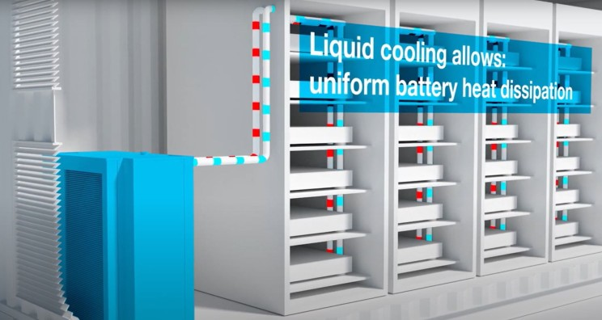
India's Grid Code and Compliance Framework
Understanding what grid codes apply — and which regulatory body owns them — is essential for any BESS developer in India.
CEA Technical Standards for Connectivity — Amendment 2023
This amendment is the most operationally significant compliance framework for BESS projects in India today. Fully enforceable from March 2025, it mandates detailed simulation-based compliance studies for all RE, hybrid, and BESS projects connecting to the grid.
The compliance boundary under this framework includes the generator pooling station, dedicated transmission line, and the complete RE + BESS system up to the Point of Interconnection (POI). Non-compliance risks delayed CTU and grid connection approvals, costly project redesigns, and commissioning risks.
Required Compliance Studies
All studies must use validated PSSE models (for RMS analysis) and PSCAD models (for Electromagnetic Transient behavior), based on OEM-provided data:
Steady-State Studies
- Reactive Power Capability: Demonstrate reactive support capability across the 0.95–1.05 p.u. voltage range
- Short Circuit Studies: Calculate Non-Conventional Source Fault Current (NCSFC) under three-phase and single-line-to-ground faults
- Voltage Profile Assessment: Evaluate steady-state voltage at POI
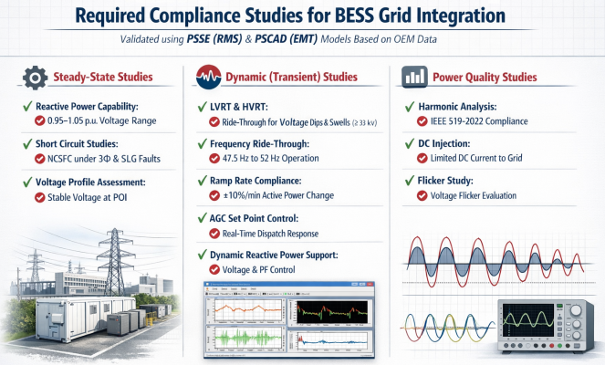
Dynamic (Transient) Studies
- LVRT & HVRT: Low and High Voltage Ride-Through — remain connected during voltage sags and swells; mandatory for all projects at 33 kV and above
- Frequency Ride-Through (FRT): Demonstrate stability across the 47.5 Hz to 52 Hz frequency range
- Ramp Rate Compliance: Simulate plant response under ±10%/min active power ramping
- AGC Set Point Control: Validate active power curtailment and response to AGC signals
- Dynamic Reactive Power Support (DPRS): Verify Q-control, voltage control, and power factor control during disturbances
Power Quality Studies
- Harmonic Analysis: Comply with IEEE 519-2022 voltage and current distortion limits
- DC Injection: Verify limits on net DC current exported to the grid
- Flicker Study: Evaluate voltage flicker during irradiance variation or BESS switching events
CERC Indian Electricity Grid Code (IEGC) 2023
The IEGC 2023 is the operational rulebook for all entities connected to India's interstate transmission system. Key provisions affecting BESS and PCS design include:
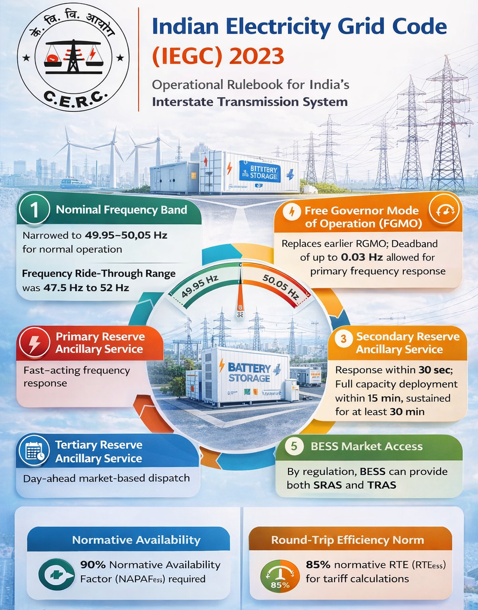
- Nominal Frequency Band: Narrowed to 49.95–50.05 Hz for normal operation
- Frequency Ride-Through Range: 47.5 Hz to 52 Hz
- Free Governor Mode of Operation (FGMO): Replaces earlier RGMO; deadband of up to 0.03 Hz allowed for primary frequency response
- Primary Reserve Ancillary Service (PRAS): Fast-acting frequency response
- Secondary Reserve Ancillary Service (SRAS): Response within 30 seconds; full capacity deployment within 15 minutes, sustained for at least 30 minutes
- Tertiary Reserve Ancillary Service (TRAS): Day-ahead market-based dispatch
- BESS Market Access: By regulation, BESS can provide both SRAS and TRAS
- Normative Availability: 90% Normative Availability Factor (NAPAFess) required
- Round-Trip Efficiency Norm: 85% normative RTE (RTEess) for tariff calculations
Power Quality: IEEE 519 Compliance
CEA explicitly mandates those harmonic current injections from generating stations — including BESS — must not exceed the limits specified in IEEE Standard 519. This is not merely a checkbox; harmonics from power electronics-based BESS can propagate through the network, causing transformer overheating, capacitor bank overstress, and protection system maloperations.
Voltage distortion limits at the Point of Common Coupling (PCC) per IEEE 519-2022 are:
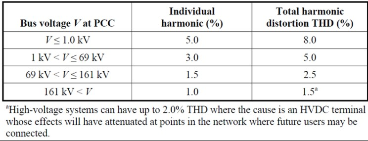
CEA Uniform Protection Protocol (November 2024)
Approved by CEA in November 2024, this protocol establishes standardized protection coordination for all grid users at 220 kV and above (132 kV in the Northeast). It covers BESS alongside thermal generators, renewable energy generators, substations, transmission lines, and HVDC terminals. The protocol ensures that protection systems prevent unintended tripping during disturbances, and that sufficient disturbance data is recorded for post-event analysis.

First Time Energization (FTEI) Process
Under Clause 8(4) of IEGC 2023, any new BESS project must follow a formal First Time Energization and Integration (FTEI) procedure. This requires real-time SCADA data availability and favorable system conditions as assessed by the State Load Despatch Centre (SLDC), prior to physical integration. Metering schemes must be approved and comply with CEA (Installation and Operation of Meters) Regulations 2006 and subsequent amendments.
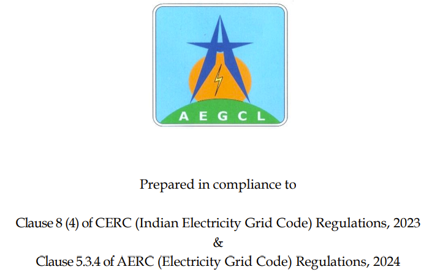
Compliance Verification: How It Works in Practice
Grid compliance in India is not self-declared — it requires independent verification. The process involves:
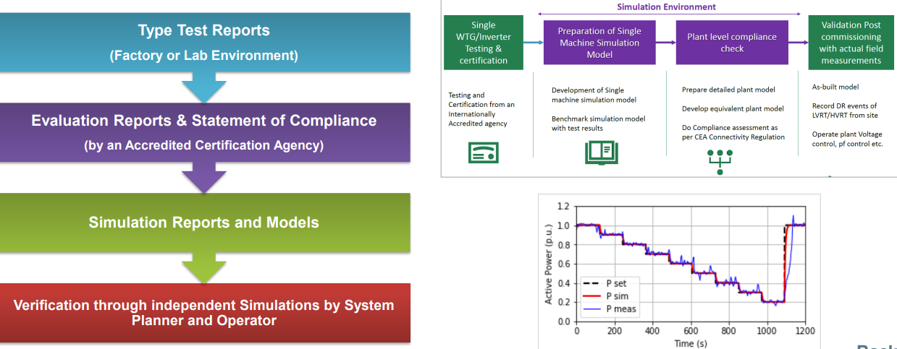
- OEM-Validated Models: Developers must submit validated PSSE and PSCAD models to CTU (Central Transmission Utility) and relevant transmission licensees
- Simulation Reports: Independent simulations conducted by both the system planner (Grid-India) and the system operator
- Type Test Reports: Conducted in factory or laboratory environments
- Statement of Compliance: Issued by an Accredited Certification Agency
- Evaluation Reports: Cross-verified against submitted simulation data
- Post-Commissioning Validation: Synchrophasor data used for performance validation and event analysis
Compliance verification must commence at least one year before physical interconnection, making early PCS vendor engagement — and procurement of OEM model data — a critical project milestone.
India-Specific PCS Procurement Considerations
The Grid-Forming Inflection Point
India's grid is increasingly inverter-dominated as solar, wind, and BESS displace synchronous generators. This is reducing system inertia — the natural resistance to frequency changes provided by spinning generators. Grid-India's January 2026 proposal to mandate GFM capability for large BESS is a direct response to this structural shift. Developers evaluating PCS vendors today should ask: "Is this PCS GFM-capable, and what is the upgrade path?"
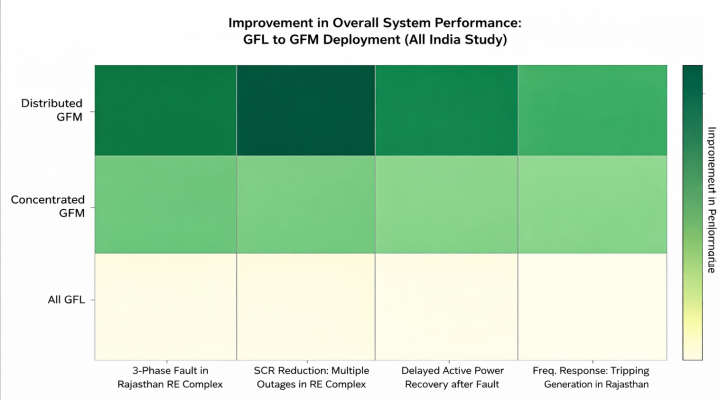
Domestic Manufacturing Context
India's BESS ambitions are tied to the broader Manufacturing Linked Incentive (MLI) and VGF programs. With the Union Cabinet approving a VGF Scheme with an outlay for large-scale BESS in March 2024, project developers are also evaluating PCS vendors on domestic content and localization. While most PCS hardware is still imported, this is a rapidly evolving area for Indian industry.
Climate and Environmental Derating
India's ambient conditions — high temperatures, dust, humidity in coastal regions, and altitude in some Himalayan-adjacent sites — require PCS specifications that account for thermal derating. A PCS rated at full power at 25°C may deliver significantly less at 45°C if not properly specified. Robust design for extreme ambient conditions, as offered by some utility-scale PCS platforms, is a non-negotiable requirement for Indian deployments.
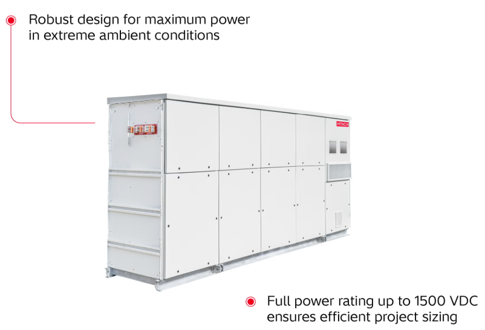
Conclusion
Selecting the right PCS for a BESS project in India is no longer a purely technical exercise — it is a strategic decision that intersects with regulatory compliance, financial performance, and long-term grid evolution. The CEA's 2023 Amendment (enforceable from March 2025), the IEGC 2023, and emerging Grid-India proposals on grid-forming capability together constitute a robust — and increasingly demanding — compliance environment.
Developers and EPCs who engage with PCS selection early, secure OEM-validated simulation models, and design for both today's requirements and tomorrow's grid-forming mandate will be best positioned to commission projects on schedule and extract maximum value from India's growing BESS market.